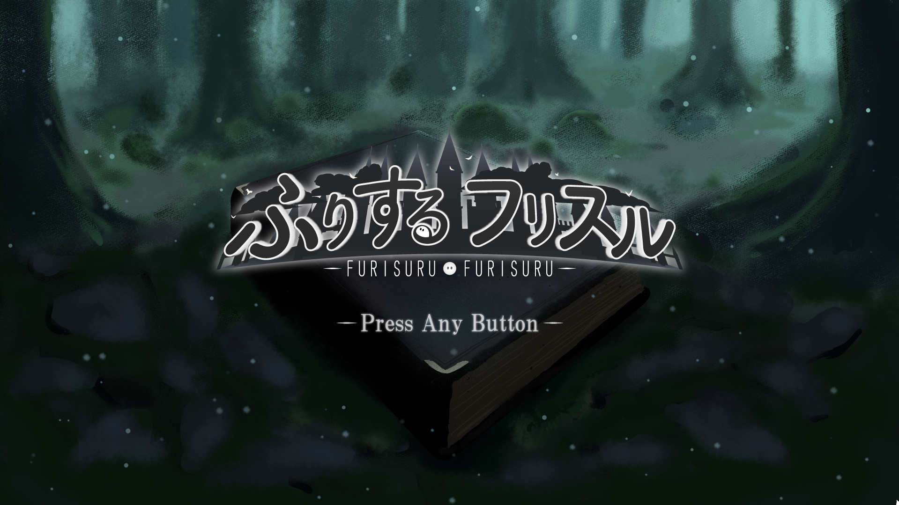

ゲームプログラマー志望
「遊び」の楽しさを 技術で「創る」。

チーム制作作品
C++,DirectXをメインに開発を学んでいます。ゲームを通じて、誰かを笑顔に出来るような、幸せだと感じてもらえるような体験を提供出来るよう、技術を磨いています。
Skillsを見るにはJavaScriptを有効にしてください。
掲載中の作品は仮データです。
作品を見るにはJavaScriptを有効にしてください。
掲載準備中です。
資格・検定の情報は、掲載準備中です。
詳しい人物紹介を表示するにはJavaScriptを有効にしてください。
連絡先は準備中です。